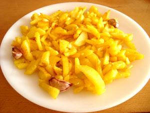

Patatas Fritas
Receta de patatas fritas caseras

Ingredientes
- 3 o 4 patatas(300g)
- 4 dientes de ajos
- Aceite de oliva Virgen Extra
- Sal
Calentar el aceite en una sartén
Añadir las patatas cortadas,la sal y los ajos
Freir al gusto
Servir en un plato
Para ir al menu principal